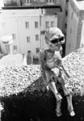

Featured Artist:
jane spacey
Other Artists:
|  |
"Alien Remains" |
|
"Building Structure" |
|
||||||
|
Featured Artist: Other Artists: |
|
|||||
| Copyright 2001 - 2014 SF Anthony Mantz Gallery and its artists, all rights reserved. | ||||||